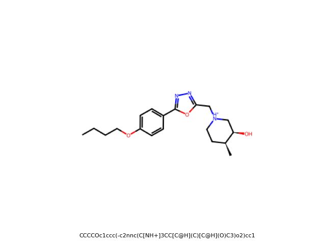
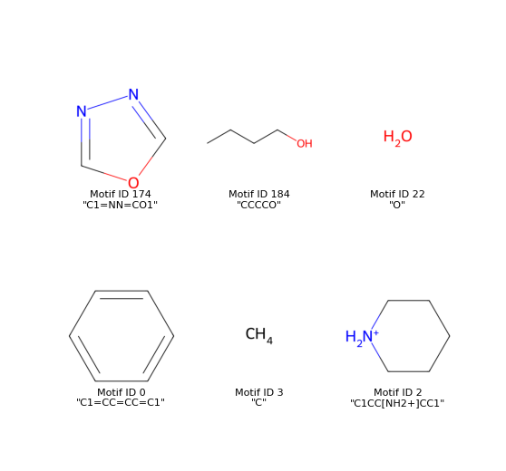
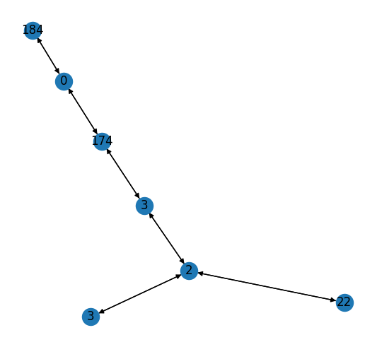

Molecular Generator
Last updated
2024-06-19
Molgena is a project on which I’ve worked between Feb 2024 and Jun 2024 for the “AI for Bioinformatics“ university exam.
As for the days of writing (roughly mid Jun 2024), the project isn’t complete but already shows early results worth to post. Hopefully could be subject of future work if anyone is interested and/or I find some spare time.
The task is Molecular Generation, that is the generation of novel molecules such that a desired chemical property is optimized (as described in Therapeutics Data Commons).
To this end, I’ve considered the works listed below:
“Junction Tree Variational Autoencoder for Molecular Graph Generation“ (Jin et al. 2019)
“Hierarchical Generation of Molecular Graphs using Structural Motifs“ (Jin et al. 2020)
“Learning to Extend Molecular Scaffolds with Structural Motifs“ (Maziarz et al. 2024)
My focus were GNNs, there are several works (previous and present) that make use of Transformer architectures and work directly on SMILES strings, but I’ve excluded those.
The datasets used to perform this task consists of chemically valid molecules, described as SMILES strings. I’ve used ZINC, a dataset made of 249455 compounds.
Property optimization is then addressed by first constructing a latent space for molecules, that is then mapped with a given property score function to obtain a \(y(\boldsymbol{z})\) function. \(y\) is the score, and \(\boldsymbol{z}\) is the latent variable.
We can now search for the latent vector that maximizes such score, the \(\boldsymbol{z^*}\) that maximizes \(y\). Finally \(z^*\) is decoded to obtain the molecule. If the latent space encodes molecules’ semantics properly, we can possibly search for molecules similar to a query molecule.
Before running Molgena (training or inference), it’s required to prepare the data. We can summarize the data preparation into the following steps:
Download the dataset
Dataset splitting
Motif vocabulary generation
Dataset filtering
Motif graph construction and caching
As mentioned above, the dataset is ZINC and initially consists of 249455 molecules. It is split randomly retaining 80% of the molecules for the training set, 10% for the validation set, and 10% for the test set.
Following the work of (Jin et al. 2019), (Jin et al. 2020) and (Maziarz et al. 2024), Molgena doesn’t generate molecules predicting bare atoms and bonds. Instead, the building bricks are Motifs, that are drawn from a pre-built Motif vocabulary, constructed from the training set.
A Motif is a molecular substructure that is obtained from the training set.
The Motif vocabulary generation consists in iterating each training set molecule and breaking bonds if:
the bond connects two different rings
the bond connects a ring and a non-leaf atom (degree > 1)
This way, from every molecule we obtain a list of candidate motifs by searching for the connected components of the resulting molecular graph. Once we iterated over all training set molecules, a candidate motif is elected to be a motif if it’s frequent enough in the training set (e.g. belongs to more than 100 molecules).
Since we want motifs to cover all training set molecules, if a candidate Motif wasn’t elected, we further decompose it to atoms and rings by breaking all bonds outside rings, and searching again for the connected components. Those will be elected to motifs.
Molegna vocabulary consists of 4331 Motifs.
Every dataset (training, validation and test) is filtered such that:
the molecule can be decomposed into valid Motifs (training set is skipped)
mgraph identity (see 2.4) is valid for the molecule
After filtering, we obtain:
199560 molecules for the training set (4 discarded)
24748 molecules for the validation set (198 discarded)
24736 molecules for the test set (210 discarded)
The motif graph (abbrev. ”mgraph”) of a molecule is a graph constructed on top of the molecule, whose nodes are motifs. Mgraphs aim at simplifying the molecule’s graph structure, and ease model predictions (e.g. avoid predicting rings atom by atom).
In code, we refer to mgraph creation as construction, and the inverse operation (back to molecular graph) as conversion. Mgraph construction/conversion must be feasible for a dataset molecule to be valid, and the result must lead to the molecule (and same canonical SMILES).
mol2 = mgraph_convert(mgraph_construct(mol1))
mol1 == mol2We call the composition of these two functions mgraph identity.
Mgraph construction is a common operation during training/inference and rather slow. To avoid it as much as possible, we cache the mgraph of already known molecules (all dataset molecules).
  
In this section I will summarize the data format I’ve used for the model’s data: molecular graphs and mgraphs.
After loading, all graph data is converted into tensor graphs, a data structure consisting of the following fields:
Node features
Edge features
Edges
Node hiddens (optional)
Edge hiddens (optional)
For training to be effective, tensor graphs must be organized into batches to leverage parallelization. Batching can be achieved by stacking node features, edge features, node hiddens, edge hiddens, and edges (summing second graph edges with the number of nodes of the first). In this way, one batched tensor graph is produced, consisting of multiple disconnected graphs.
Molecular graphs (i.e. molecules) are represented as SMILES strings in the ZINC dataset. SMILES strings parsing is performed by rdkit. The resulting molecule is converted to a tensor graph:
the node features are the atomic number, explicit valence, formal charge, isotope and mass
the edge features are the bond type
Mgraphs are constructed to networkx graphs. Only then are converted to tensor graphs.
Mgraph nodes’ attributes is just the motif ID. Every node’s motif ID is mapped to a hand-crafted feature vector of a fixed dimensionality, similarly to hash encoding. We seed a random number generator with the motif ID, and generate such feature vector.
Mgraphs edge features are a concatenation of the first and second node feature vector (generated as described above), and the bond type (one scalar value).
Molgena architecture resembles MoLeR architecture (Maziarz et al. 2024). It’s composed of 5 different modules, each addressing a specific task, and they operate together to incrementally construct a target molecule. Molgena exhibits an encoder module, that is responsible for mapping molecules to a latent space that encodes their semantics.
EncodeMol
SelectMotifMlp
SelectAttachmentClusters
SelectAttachmentAtom
SelectAttachmentBondType
During experiments I’ve tried several configurations of Molgena, the one I found working better is called ”molgena-2b”. Below is described the technical layout of each module.
A tensorized graph (either molecular graph or mgraph)
A latent vector representing the input graph, and nodes/edges hidden vectors that are generated after the propagation step.
This module is a GNN, and the Message Passing used is the same described by (Jin et al. 2019). Specifically, it consists of \(T\) iterations to compute the edges’ hidden vector \(\boldsymbol\nu_{uv}\):
\[\boldsymbol\nu_{uv}^{(t)} = \tau(\mathbf{W}_1^g \mathbf{x}_u + \mathbf{W}_2^g \mathbf{x}_{uv} + \mathbf{W}_3^g \sum_{w \in N(u) \backslash v} \nu_{wu}^{(t-1)})\]
And one final step to calculate the nodes’ hidden vector \(\mathbf{h}_u\):
\[\mathbf{h}_u = \tau(\mathbf{U}_1^g \mathbf{x}_u + \sum\nolimits_{v \in N(u)} \mathbf{U}_2^g \boldsymbol\nu_{vu}^{(T)})\]
At this point, every node (or atom) will have developed a hidden vector that is dependant on its neighborhood within the graph. We compute the final molecule’s latent vector by taking a mean of all nodes’ hidden vectors:
\[\mathbf{h}_G = \sum_i \frac{\mathbf{h}_i}{\vert V \vert}\]
This type of message passing, isn’t provided by pytorch-geometric, and I didn’t find easy to integrate it as a custom message passing network. Therefore, I’ve implemented it by scratch with pytorch. Graph data format and batching is inspired on pytorch-geometric.
The same module appears in two instances within Molgena: one for molecular graphs, the other for mgraphs.
The partial molecule latent vector
The target molecule latent vector
A distribution over the Motif vocabulary indicating how suitable is a Motif to be picked as next. An extra item is added to indicate the END of the generation. Therefore, the final output shape is \(4331 + 1 = 4332\).
The module is an MLP with 3 hidden layers of dimensionality 384, 512, 1024.
The partial molecule mgraph
The motif feature vector
The output is a binary vector over the partial molecule mgraph nodes (or clusters). Thus one entry per cluster. It indicates whether a cluster participate or not to the attachment with the selected next Motif.
This module requires the partial molecule mgraph to have valid hidden vectors, and thus message passing to have run on it. Afterwards, an MLP is applied on all clusters, paired with the Motif feature vector. We apply a sigmoid on the output logit to obtain a binary value (picked or not picked).
Hidden vectors of cluster1 nodes
Latent representation for cluster2
Target molecule latent vector
The output is a binary vector over the partial molecule mgraph nodes (or clusters). Thus one entry per cluster. It indicates whether a cluster participate or not to the attachment with the selected next Motif.
Selects a cluster1 atom to form the attachment with cluster2.
This module appears in two instances in Molgena: to select the
attachment atom from the partial molecule cluster, and to select the
atom on the Motif.
In the first instance, cluster1 is the cluster chosen by
SelectAttachmentClusters, and cluster2 is the Motif.
In the second instance, cluster1 is the Motif, and cluster2 a latent
vector calculated as the mean of cluster1 hidden vectors. Please
note: the hidden vectors are computed by running message passing on the
whole graph, while the mean is only on a subset of those.
Hidden vector for cluster1 atom
Hidden vector for cluster2 atom
The target molecule latent vector
A distribution over the 4 possible bond types: none, single/double/triple covalent.
This module is an MLP whose input are the hidden vectors for cluster1 and cluster2 atoms, and the target molecule latent vector.
We’ve trained Molgena on the reconstruction task.
The problem formulation is: given a molecule drawn from the dataset, we train our model to incrementally attach motifs to reconstruct it. The purpose of training on such task is to build a semantically meaningful latent space, where structurally similar molecules are near each other, on which leverage to achieve the former property optimization task.
At every training inference, we take into consideration a single attachment step. That is, drawn the molecule from the training set, we construct the mgraph for such molecule and then sample a subgraph of the mgraph. The sampling is performed such that it’s equally probable to sample a subgraph with any number of nodes (including an empty or a full graph). Then, we generate annotations for all model’s modules: the next motif is randomly sampled (any that is missing from the mgraph subgraph), the two attachment atoms, and the bond type.
Once the whole attachment step is annotated, the inference follows these steps:
pmol = "partial molecule"
tmol = "target molecule"
pmol_mgraph = ConstructMgraph(pmol)
z_pmol = EncodeMol(pmol)
z_tmol = EncodeMol(tmol)
EncodeMol(pmol_mgraph)
motif = SelectMotifMlp(pmol)
z_motif = EncodeMol(motif)
cluster1 = SelectAttachmentClusters(pmol_mgraph, motif.feature_vector)
cluster1_atom = SelectAttachmentAtom(cluster1, z_motif, z_tmol)
motif_atom = SelectAttachmentAtom(motif, repr(cluster1), z_tmol)
bond_type = SelectAttachmentBondType(motif_atom, cluster2_atom)Every module’s prediction is evaluated against its ground truth. For readability, modules are numbered: 1, 2, 31, 32 and 4.
\[\mathcal{L}_1 = CrossEntropy(\boldsymbol{y_1}, \boldsymbol{\hat{y_1}})\] Where \(\boldsymbol{y_1}\) is the prediction: a normalized vector representing a distribution over the Motif vocabulary. \(\boldsymbol{\hat{y_1}}\) is a one-hot vector representing the ground truth.
\[\mathcal{L}_2 = BinaryCrossEntropy(\boldsymbol{y_2}, \boldsymbol{\hat{y_2}})\] Where \(\boldsymbol{y_2}\) is the prediction: a binary vector indicating whether a mgraph’s node (or cluster) is eligible or not for attachment with the Motif . \(\boldsymbol{\hat{y_2}}\) is the ground truth.
\[\mathcal{L}_{31} = BinaryCrossEntropy(\boldsymbol{y_{31}}, \boldsymbol{\hat{y_{31}}})\]
Where \(\boldsymbol{y_{31}}\) is the prediction: a binary vector indicating whether a cluster1’s atom is eligible or not for attachment with the Motif . \(\boldsymbol{\hat{y_{31}}}\) is the ground truth
\[\mathcal{L}_{32} = BinaryCrossEntropy(\boldsymbol{y_{32}}, \boldsymbol{\hat{y_{32}}})\]
Where \(\boldsymbol{y_{32}}\) is the prediction: a binary vector indicating whether a motif’s atom is eligible or not for attachment with cluster1 . \(\boldsymbol{\hat{y_{32}}}\) is the ground truth.
\[\mathcal{L}_4 = CrossEntropy(\boldsymbol{y_4}, \boldsymbol{\hat{y_4}})\]
Where \(\boldsymbol{y_{4}}\) is the prediction: a distribution over the 4 possible bond types: none 1, single, double and triple covalent. \(\boldsymbol{\hat{y_{4}}}\) is a one-hot vector indicating the ground truth.
The final loss function is the weighted sum of the contributes provided by each module:
\[\begin{gathered} \mathcal{L} = \alpha_1 * \mathcal{L}_1 + \alpha_2 * \mathcal{L}_2 + \alpha_{31} * \mathcal{L}_{31} + \alpha_{32} * \mathcal{L}_{32} + \alpha_4 * \mathcal{L}_4 \end{gathered}\]
During training, Molgena is repeatedly evaluated with a set of molecules sampled from the test set. The evaluation is performed at different levels: at module level, and model level.
At module level, we check the accuracy of each prediction against the labels for one attachment step:
\[\mathbf{m}_1 = \frac{n_{correct}}{n_{total}}\]
Considering a batch, the accuracy is the number of correctly predicted motifs over the batch size.
SelectAttachmentClusters (2) \[\mathbf{m}_2 = \frac{|\boldsymbol{c_{pred}} \cap \boldsymbol{c_{label}}|} {|\boldsymbol{c_{pred}} \cup \boldsymbol{c_{label}}|}\]
The accuracy is the IOU2 of the predicted clusters and the labels.
SelectAttachmentAtom(cluster1) (31) \[\mathbf{m}_{31} = \frac{|\boldsymbol{a_{pred}} \cap \boldsymbol{a_{label}}|} {|\boldsymbol{a_{pred}} \cup \boldsymbol{a_{label}}|}\]
The accuracy is the IOU of the predicted cluster1 atoms and the labels.
SelectAttachmentAtom(motif) (32) \[\mathbf{m}_{32} = \frac{|\boldsymbol{a_{pred}} \cap \boldsymbol{a_{label}}|} {|\boldsymbol{a_{pred}} \cup \boldsymbol{a_{label}}|}\]
The accuracy is the IOU of the predicted cluster1 atoms and the labels.
SelectAttachmentBondType (4) \[\mathbf{m}_4 = \frac{n_{correct}}{n_{total}}\]
Considering a batch, the accuracy is the number of correctly predicted bond types over the batch size.
The evaluation for the reconstruction task is also called model level evaluation (or ”complete inference” internally).
This evaluation consists in drawing a molecule from the test set, albeit the target molecule. And inference all Molgena modules to reconstruct the target molecule from scratch.
It’s an iterative process that ends when the END token is selected by the SelectMotifMlp module,
tmol = "target molecule"
pmol = ""
SelectMotifMlp(pmol, tmol)
z_pmol = EncodeMol(pmol)
z_tmol = EncodeMol(tmol)
EncodeMol(pmol_mgraph)
motif = SelectMotifMlp(pmol)
z_motif = EncodeMol(motif)
cluster1 = SelectAttachmentClusters(pmol_mgraph, motif.feature_vector)
cluster1_atom = SelectAttachmentAtom(cluster1, z_motif, z_tmol)
cluster2_atom = SelectAttachmentAtom(cluster2, repr(cluster1), z_tmol)
bond_type = SelectAttachmentBondType(cluster1_atom, cluster2_atom)Graph automorphisms had been a challenge when designing the model training, specifically when annotating a single attachment step.
Graph automorphisms are mappings of graph nodes onto themselves, such that the graph connectivity is preserved. In our case, we have to take into account that nodes have different features (e.g. in molecular graphs, nodes will store atom properties), therefore the number of automorphisms is lower. If a tuple of nodes can be permuted as desired without changing the graph, this is a valid graph automorphism, and such nodes are said to be isomorphic.
Molecules, and in turn mgraphs, are rich of such isomorphisms. For example, all carbons participating in a carbon ring are isomorphic nodes.
In my early annotation algorithm, I was breaking the molecule bonds and annotating just the atom where the bond was removed. However, the model had no way to predict the annotated bond atom, if isomorphic to other atoms: they all had the same hidden vector after message passing. The outcome was that the model loss function converged, and in turn accuracy.
The issue was addressed by annotating not only a single node, but all nodes isomorphic to it. The prediction was shifted from a single-class to a multi-class prediction.
The set of isomorphic nodes is found by using the same message passing network that is also used in Molgena (randomly initialized). Nodes with approximately the same hidden vector are isomorphic. Isomorphic nodes in a graph depend on nodes/edges feature vector, and the number of iterations performed in message passing.
As for the days of writing, I can only evaluate results for the reconstruction task, and they’re not yet comparable to the literature.
The model showcases good decisions for choosing the next motif, attachment atoms and bond type, but often chooses the wrong partial molecule’s cluster for attachment, leading to a chemically invalid molecule. Rarely the reconstruction terminates with an END token and a chemically valid molecule, even more rarely it perfectly reconstructs the target.
I think the problem can be addressed by improving the message passing network (reduce the number of node isomorphisms), increasing the model size, training for more and on a better hardware, adding the target molecule to SelectAttachmentClusters (might be the cause).
Increase the accuracy of the reconstruction task, SOTA for similar models is >70%
Important: add target molecule latent vector to input to SelectAttachmentClusters
Improve ”complete inference” performance batching and parallelization
Improve reconstruction accuracy by improving the MPN (in literature they employ LSTM)
Explore the latent space: try PSO (Particle Swarm Optimization) to search for improved molecules
Special thanks
For this work, I thank Kidara from the Italian Math Telegram group, and the guys from the discord Chemistry server, for helping me throughout this journey.